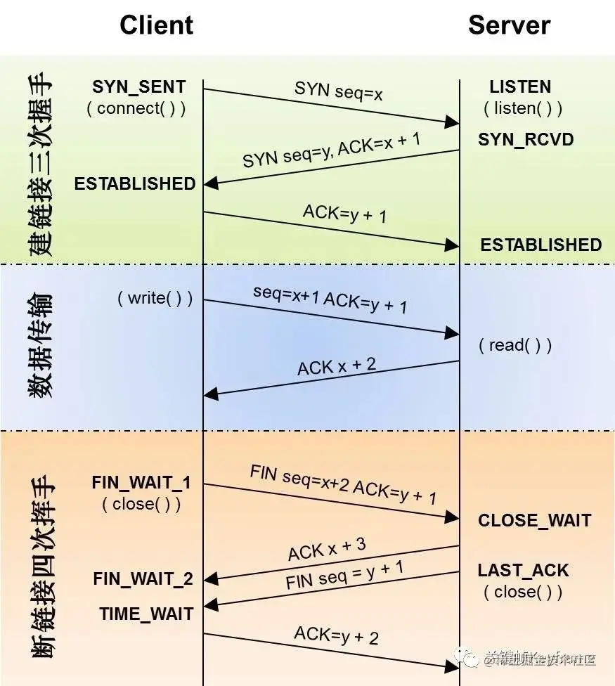
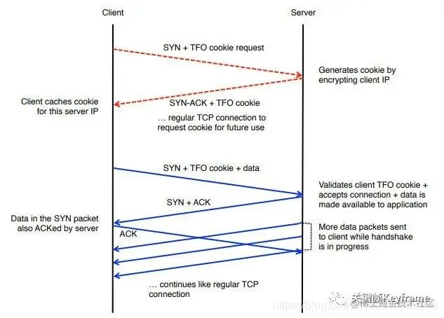
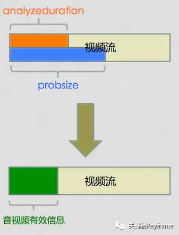

视频播放时的画面打开速度是播放体验中一个非常重要的指标，如果视频画面打开速度太慢，用户失去耐心可能就直接划走不看了。如果视频速度打开够快，甚至可以带来业务上的收益，字节跳动就曾给出过一份数据：对一部分型号的 Android 手机，播放首帧时长从平均 170ms 优化到 100ms，带来了 0.6% 左右的用户播放时长提升。
对于视频播放时的画面打开速度，我们可以用下面的指标来衡量：
- 播放秒开率，指的是播放器开始初始化到视频第一帧画面渲染出来的时间不超过 1s 的次数在总的播放次数中的比例。
- 播放平均首帧时长，指的是播放器开始初始化到视频第一帧画面渲染出来的平均耗时。
拆解播放器请求视频并播放的过程，我们大致可以分为下面几个阶段：
- 业务侧结合优化
- DNS 解析
- TCP 连接
- HTTP 响应
- 音视频探测
- 媒体封装格式探测
- 音频编码格式探测（要创建解码器）
- 视频编码格式探测（要创建解码器）
- 音视频解码
- 缓冲和起播策略
- 渲染
我们就结合开源播放器 IJKPlayer[1]，从这几个阶段来分别聊一聊视频秒开的优化思路。
1、业务侧结合优化
1.1、客户端业务侧提前获取流地址
说到优化，首先要看客户端上进入直播间的业务场景是什么样的？一般而言，都是从一个直播列表页面，点击某一个直播卡片（Cell）即进入直播间。这个过程中，数据流是怎么走的呢？最简单的做法是，从直播列表页点击某个直播卡片到直播间后，从服务器请求直播流地址以及各种直播间信息（主播信息、聊天信息、点赞信息、礼物信息等等），拿到直播流地址后，交给播放器播放。
在这个过程中，我们可以看到播放器必须等到进入直播间请求到直播流地址后才能开始播放，这个时间点其实是可以提前的：我们可以在直播列表页就拿到每个直播间对应的直播流地址，在进入直播间时直接传过去，这样一进入直播间播放器就可以拿着直播流地址开始播放了，省去了从服务器请求直播流地址的时间（虽然这个时间可能没多少）。
甚至，我们可以在直播列表页当滑到一个卡片就让播放器拿着直播流地址预加载，进入直播间时则直接展示画面。
业务侧提前获取流地址
另外，客户端业务侧还可以在进入直播间之前通过 HTTPDNS 来选择网络情况最好的 CDN 节点，在进入直播间时从最好的节点拉取直播流播放从而优化网络加载的时间，加快首屏渲染。
1.2、使用 URL 替代 VID 方式
传统的 VID 播放方式，视频在播放时，客户端播放器拿到是 VID，还需要再去服务端请求到视频 URL 才能真正启动播放，这样多了一次请求等待时间，降低了视频打开速度。如果将视频 URL 封装在 model 中直接给播放器就可以省下一次请求 URL 的时间了。
1.3、上下滑短视频场景提前加载播放器
现在大部分短视频消费侧的业务 UI 和交互形态都是类似抖音那样的全屏上下滑形式。常见的处理方式是等待滑动结束时加载下一个坑位的播放器进行视频的切换，这里其实可以优化为：在滑动开始时就加载下一个坑位的播放器启动视频播放。不过，这里需要做到的是播放器要有异步加载的能力，否则可能会造成 UI 线程卡顿。在这个基础上，再配合上播放器实例复用、预加载、预渲染优化就可以大大提高视频打开体验。
1.4、封面图清晰度降级
在短视频业务实现中，我们通常会加载一张视频首帧的封面图作为占位图，等待播放器完成视频首帧渲染时隐藏掉这张封面图完成画面衔接给用户一种流畅的体验。
当视频首帧优化做的比较好时，这张封面图反过来可能成为了无用的成本和负担。比如，当我们已经可以通过预加载、预渲染较快的用播放器完成后面坑位视频首帧的渲染，这时候还去加载对应的封面图，就既抢了带宽，又浪费了流量。
这时候可以对封面清晰度进行降级，比如原来 720P 的封面图可以降级到 540P。甚至，我们可以优先做预加载、预渲染，兜底情况才加载封面图。
2、DNS 解析
2.1、优化 DNS 解析过程
DNS 解析是网络请求的第一步，在我们用基于 FFmpeg 实现的播放器 ffplay 中，所有的 DNS 解析请求都是 FFmpeg 调用 getaddrinfo 方法来获取的。
我们如何在 FFmpeg 中统计 DNS 耗时呢？
可以在 libavformat/tcp.c 文件中的 tcp_open 方法中，按以下方法统计：
int64_t start = av_gettime();
if (!hostname[0])
ret = getaddrinfo(NULL, portstr, &hints, &ai);
else
ret = getaddrinfo(hostname, portstr, &hints, &ai);
int64_t end = av_gettime();如果在没有缓存的情况下，实测发现一次域名的解析会花费至少 300ms 左右的时间，有时候更长，如果本地缓存命中，耗时很短，几个 ms 左右，可以忽略不计。缓存的有效时间是在 DNS 请求包的时候，每个域名会配置对应的缓存 TTL 时间，这个时间不确定，根据各域名的配置，有些长有些短，不确定性比较大。
为什么 DNS 的请求这么久呢？一般理解，DNS 包的请求，会先到附近的运营商的 DNS 服务器上查找，如果没有，会递归到根域名服务器，这个耗时就很久。一般如果请求过一次，这些服务器都会有缓存，而且其他人也在不停的请求，会持续更新，下次再请求的时候就会比较快。
在测试 DNS 请求的过程中，有时候通过抓包发现每次请求都会去请求 A 和 AAAA 查询，这是去请求 IPv6 的地址，但由于我们的域名没有 IPv6 的地址，所以每次都要回根域名服务器去查询。为什么会请求 IPV6 的地址呢，因为 FFmpeg 在配置 DNS 请求的时候是按如下配置的：
hints.ai_family = AF_UNSPEC;它是一个兼容 IPv4 和 IPv6 的配置，如果修改成 AF_INET，那么就不会有 AAAA 的查询包了。通过实测发现，如果只有 IPv4 的请求，即使是第一次，也会在 100ms 内完成，后面会更短。这里是一个优化点，但是要考虑将来兼容 IPv6 的问题。
DNS 的解析一直以来都是网络优化的首要问题，不仅仅有时间解析过长的问题，还有小运营商 DNS 劫持的问题。采用 HTTPDNS 是优化 DNS 解析的常用方案，不过 HTTPDNS 在部分地区也可能存在准确性问题，综合各方面可以采用 HTTPDNS 和 LocalDNS 结合的方案，来提升解析的速度和准确率。大概思路是，App 启动的时候就预先解析我们指定的域名，因为拉流域名是固定的几个，所以完全可以先缓存在 App 本地。然后会根据各个域名解析的时候返回的有效时间，过期后再去解析更新缓存。至于 DNS 劫持的问题，如果 LocalDNS 解析出来的 IP 无法正常使用，或者延时太高，就切换到 HTTPDNS 重新解析。这样就保证了每次真正去拉流的时候，DNS 解析的耗时几乎为 0，因为可以定时更新缓存池，使每次获得的 DNS 都是来自缓存池。
那么怎么去实现 HTTPDNS 呢？
方案一：IP 直连。
假设原直播流的 URL 是：http://www.example.com/abc.flv。假设从 HTTPDNS 服务获取的 www.example.com 这个 Host 对应的 IP 是：192.168.1.1。那么处理后的 URL 是：http://192.168.1.1/abc.mp4。如果直接用这个 URL 去发起 HTTP 请求，有些情况可以成功，但很多情况是不行的。如果这个 IP 的机器只部署了 www.example.com 对应的服务，就能解析出来，如果有多个域名的服务，CDN 节点就无法正确的解析。这个时候一般需要设置 HTTP 请求的 header 里面的 Host 字段。
AVDictionary **dict = ffplayer_get_opt_dict(ffplayer, opt_category);
av_dict_set(dict, "headers", "Host: www.example.com", 0);但是这个方案有两个问题：
1）服务端采用 302/307 跳转的方式调度资源，则 IP 直连会有问题。
如果在客户端发出请求（如：http://www.example.com/abc.flv）的时候，服务端是通过 302/307 调度方式返回直播资源的真实地址（如：http://www.realservice.com/abc.flv），这时 IP 直连会有问题。因为客户端并不知道跳转逻辑，而客户端做了 IP 直连，用的是 www.example.com 获取到的直连 IP 并替换成了 http://192.168.1.1/abc.mp4，这个请求到达服务器，服务器又没有对应的资源，则会导致错误。这种情况可以让服务端采用不下发 302 跳转的方式，但这样就不通用了，会给将来留下隐患。所以常见的做法是做一层播控服务，客户端请求播控服务获取到实际的播放地址以及各种其他的信息，然后再走 IP 直连就没问题。
还可以参考：iOS 302 等重定向业务场景 IP 直连方案说明[2]。
2）使用 HTTPS 时，IP 直连会有问题。
这种方案在使用 HTTPS 时，是会失败的。因为 HTTPS 在证书验证的过程，会出现 domain 不匹配导致 SSL/TLS 握手不成功。这时候的方案参考 HTTPS（含 SNI）业务场景 IP 直连方案说明[3] 和 iOS HTTPS SNI 业务场景IP直连方案说明[4]。
方案二：替换 FFmpeg 的 DNS 实现。
另一种方案是替换原来的 DNS 解析的实现。在 FFmpeg 中即替换掉 tcp.c 中 getaddreinfo 方法，这个方法就是实际解析 DNS 的方法，比如下面代码：
if (my_getaddreinfo) {
ret = my_getaddreinfo(hostname, portstr, &hints, &ai);
} else {
ret = getaddrinfo(hostname, portstr, &hints, &ai);
}在 my_getaddreinfo 中可以自己实现 HTTPDNS 的解析逻辑从而优化原来的 DNS 解析速度。
总体来说，DNS 优化后，直播首屏时间能减少 100ms～300ms 左右，特别是针对很多首次打开，或者 DNS 本地缓存过期的情况下，能有很好的优化效果。
2.2、提升 HTTP DNS 的有效率
在使用 HTTP DNS 做 IP 直连时可能会发生解析到的 IP 失效的情况。比如：
- 播放视频或直播时，网络发生切换（比如 WIFI 切到 4G），播放器刷新连接，这时候如果用的还是在之前网络环境下取得的 IP，那这个 IP 很大可能是失效的。
- 在上下滑的场景，业务层如果提前获取还未展示的视频或直播对应的 HTTP DNS IP，那用户滑到对应的内容时，这个 IP 也可能是失效的。
- 播放器在内部做一些刷新操作时，如果复用了当前的 HTTP DNS IP，这个 IP 也可能是失效的。
要提升 HTTP DNS 的有效率，可以做一个轮询模块，参考 HTTP DNS IP 的过期时间来定时轮询并缓存新 IP 这样来保持 IP 的有效性，同时也要处理各种网络切换或内部刷新时更新 IP 的情况。
3、TCP 连接
3.1、优化 TCP 建连耗时
TCP 建连耗时在这里即调用 Socket 的 connect 方法建立连接的耗时，它是一个阻塞方法，它会一直等待 TCP 的三次握手完成。它直接反应了客户端到 CDN 服务器节点的点对点延时情况，实测在一般的 WIFI 网络环境下耗时在 50ms 以内，它的时间反应了客户端的网络情况或者客户端到节点的网络情况。
要统计这段耗时，可以在 libavformat/tcp.c 文件中的 tcp_open 方法中，按以下方法统计：
int64_t start = av_gettime();
if ((ret = ff_listen_connect(fd, cur_ai->ai_addr, cur_ai->ai_addrlen,
s->open_timeout / 1000, h, !!cur_ai->ai_next)) < 0) {
if (ret == AVERROR_EXIT)
goto fail1;
else
goto fail;
}
int64_t end = av_gettime();TCP 连接耗时可优化的空间主要是针对建连节点链路的优化，主要受限于三个因素影响：用户自身网络条件、用户到 CDN 边缘节点中间链路的影响、CDN 边缘节点的稳定性。因为用户网络条件有比较大的不可控性，所以优化主要会在后面两个点。可以结合着用户所对应的城市、运营商的情况，同时结合优化服务端的 CDN 调度体系，结合 HTTPDNS 给用户分配更优的连接链路（比如就近接入），从而优化建连耗时。
3.2、通过 TCP Fast Open 优化 TCP 建连时长
我们通常提到的 TCP 建立连接的三次握手过程和断开连接的四次挥手过程如下图所示：

TCP 三次握手和四次挥手
TFO(TCP Fast Open) 是用来加速连续 TCP 连接的数据交互的 TCP 协议扩展，是对 TCP 握手过程的一种简化。它的原理是：在 TCP 三次握手的过程中，当用户首次访问 Server 时，发送 SYN 包，Server 根据用户 IP 生成 Cookie（已加密），并与 SYN-ACK 一同发回 Client；当 Client 随后重连时，在 SYN 包携带 TCP Cookie；如果 Server 校验合法，则在用户回复 ACK 前就可以直接发送数据；否则按照正常三次握手进行。
TFO 由 Google 于 2011 年的论文 TCP Fast Open 中提出，IPV4 的 TFO 已经合入 Linux Kernel Mainline，Client 内核版本为 3.6，Server 内核版本为 3.7。
Google 研究发现 TCP 三次握手是页面延迟时间的重要组成部分，所以他们提出了 TFO：在 TCP 握手期间交换数据，这样可以减少一次 RTT。根据测试数据，TFO 可以减少 15% 的 HTTP 传输延迟，全页面的下载时间平均节省 10%，最高可达 40%。
TCP Fast Open 流程图如图：

TCP Fast Open 流程
Requesting Fast Open Cookie in connection 1:
TCP A (Client) TCP B (Server)
______________ ______________
CLOSED LISTEN
#1 SYN-SENT ----- <SYN,CookieOpt=NIL> ----------> SYN-RCVD
#2 ESTABLISHED <---- <SYN,ACK,CookieOpt=C> ---------- SYN-RCVD
(caches cookie C)
Performing TCP Fast Open in connection 2:
TCP A (Client) TCP B (Server)
______________ ______________
CLOSED LISTEN
#1 SYN-SENT ----- <SYN=x,CookieOpt=C,DATA_A> ----> SYN-RCVD
#2 ESTABLISHED <---- <SYN=y,ACK=x+len(DATA_A)+1> ---- SYN-RCVD
#3 ESTABLISHED <---- <ACK=x+len(DATA_A)+1,DATA_B>---- SYN-RCVD
#4 ESTABLISHED ----- <ACK=y+1>--------------------> ESTABLISHED
#5 ESTABLISHED --- <ACK=y+len(DATA_B)+1>----------> ESTABLISHEDTFO 的流程如下：
- 1、Client 向 Server 发送 SYN 包并请求 TFO Cookie。
- 2、Server 根据 Client 的 IP 加密生成 Cookie，随 SYN+ACK 发给 Client。
- 3、Client 储存 TFO Cookie。
当连接断掉，重连后的流程如下：
- 1、Client 向 Server 发送 SYN 包（携带 TCP Cookie），同时附带请求和数据。
- 2、Server 校验 Cookie（解密 Cookie 以及比对 IP 地址或者重新加密 IP 地址以和接收到的 Cookie 进行对比）。如果验证成功，Server 向 Client 发送 SYN+ACK。
-
- 如果验证失败，则丢弃 Client 在步骤 1 中 TFO 请求携带的数据，回复 SYN+ACK，后续完成正常的三次握手。
- 如果步骤 1 中 Cookie 在网络传输的过程中被丢弃，Client 在 RTO 后，发起普通的 TCP 连接，流程如图：
- 如果验证失败，则丢弃 Client 在步骤 1 中 TFO 请求携带的数据，回复 SYN+ACK，后续完成正常的三次握手。
Cookie 被丢弃情况
- 3、如果在步骤 2 验证成功，那么 Server 在发送 SYN+ACK 后，在收到 Client 的 ACK 之前就可以回复该请求的响应报文，发送数据。
- 4、Client 发送 ACK 回复步骤 2 中 Server 的 SYN。
- 5、Client 发送 ACK 回复步骤 3 中 Server 的 SYN。
- 6、随后的操作和普通的 TCP 连接一致。
建立了 TFO 连接而又没有完成 TCP 连接的请求在 Server 端被称为 pending TFO connection，当 pending 的连接超过上限值，Server 会关闭 TFO，后续的请求会按正常的三次握手处理。
如果一个带有 TFO 的 SYN 请求如果在一段时间内没有收到回应，用户会重新发送一个标准的 SYN 请求，不带任何其他数据。
参考：
- TCP Fast Open 实践笔记[5]
- TCP Fast Open 的概念、作用以及实现[6]
- TCP 的那些事 | TCP Fast Open[7]
3.3、通过 TCP 预连接和连接复用优化建连时长
在网络连接层做一个缓存模块，这个缓存会以 IP 为 key 缓存当前的 socket 连接，并设置超时时间。这样一来，就可以提供接口给业务层做 TCP 预连接。
比如在直播间上下滑的场景，业务层可以对下一个直播间的流做预连接，预连接的过程是使用域名做 HTTPDNS 或 LocalDNS 得到 IP 来做连接。当真正开始拉流时，网络层根据 HTTPDNS 或者 LocalDNS 得到的 IP 发现已经有 socket 连接的缓存，就复用这个连接，这样就节省了重新建连的时间。
为了提高预连接的命中率，还可以对高频使用的域名做持续预连接，当预连接超时后就再重新连接。需要注意的是，当网络发生切换时，需要刷新预连接缓存池，比如从 WIFI 切到 4G 对应的服务端节点是需要切换的。
3.4、避免首帧网络带宽争抢
在短视频上下滑场景中，有时候会遇到用户快速滑动的情况，这时候我们对后面坑位的视频做了预连接、预加载反而可能会适得其反。因为预加载的视频被用户快速滑走了，并没有被用到，这就浪费了带宽，并且由于预加载视频数据还会抢占后面其他视频加载首帧的带宽从而导致黑屏。
所以当检测到用户是快速滑动时，可以及时中断预连接的 Socket，避免网络带宽争抢。
4、HTTP 响应
4.1、优化 HTTP 响应耗时
HTTP 响应耗时是指客户端发起一个 HTTP Request 请求，然后等待 HTTP 响应的 Header 返回这部分耗时。直播拉流 HTTP-FLV 协议也是一个 HTTP 请求，客服端发起请求后，服务端会先将 HTTP 的响应头部返回，不带音视频流的数据，响应码如果是 200，表明视频流存在，紧接着就开始下发音视频数据。HTTP 响应耗时非常重要，它直接反应了 CDN 服务节点处理请求的能力。它与 CDN 节点是否有缓存这条流有关，如果在请求之前有缓存这条流，节点就会直接响应客户端，这个时间一般也在 50ms 左右，最多不会超过 200ms，如果没有缓存，节点则会回直播源站拉取直播流，耗时就会很久，至少都在 200ms 以上，大部分时间都会更长，所以它反应了这条直播流是是冷流还是热流，以及 CDN 节点的缓存命中情况。
如果需要统计它的话，可以在 libavformat/http.c 文件中的 http_open 方法：
int64_t start = av_gettime();
ret = http_open_cnx(h, options);
int64_t end = av_gettime();4.2、提升 CDN 边缘节点命中率
通常 CDN 的缓存命中策略是与访问资源的 URL 有关。如果命中策略是 URL 全匹配，那么就要尽量保证 URL 的变化性较低。 比如：尽量不要在 URL 的参数中带上随机性的值，这样会造成 CDN 缓存命中下降，从而导致不断回源，这样访问资源耗时也就增加了。当然这样就失去了一些灵活性。
CDN 方面其实可以提供一些配置策略，比如：根据域名可配置对其缓存命中策略忽略掉某些参数。这样就能保证一定的灵活性了。
客户端还可以和 CDN 配合来实现对 CDN 边缘节点命中率的埋点。通常做法是让 CDN 厂商在 HTTP 请求的 response header 里面带上是否命中边缘节点的字段，客户端在收到响应时解析这个字段来实现埋点。
此外，还可以对服务端对热门的内容进行监控，对热门的资源进行预热，使之尽可能缓存到边缘节点，从而提高边缘节点的命中率。
4.3、优化短视频第一次 Get 请求
在播放器请求短视频时，通常会先发起一次 Get 请求来获取短视频的文件长度，然后再根据文件长度来获取数据内容。
如果我们提前获取短视频的文件长度，通过设置 HTTP 请求的 Range 则可以省去第一次 Get 请求来优化首帧时长。
5、音视频探测
5.1、优化音视频流探测耗时
当我们做直播业务时，播放端需要一个播放器来播放视频流，当一个播放器支持的视频格式有很多种时，问题就来了。一个视频流来了，播放器是不清楚这个视频流是什么格式的，所以它需要去探测到一定量的视频流信息，去检测它的格式并决定如何去处理它。这就意味着在播放视频前有一个数据预读过程和一个分析过程。但是对于我们的直播业务来说，我们的提供的直播方案通常是固定的，这就意味着视频流的格式通常是固定的，所以一些数据预读和分析过程是不必要的。在直播流协议格式固定的情况下，只需要读取固定的信息即可开始播放。这样就缩短了数据预读和分析的时间，使得播放器能够更快地渲染出首屏画面。

音视频探测
基于 FFmpeg 实现的播放器，在播放视频时都会调用到一个 avformat_find_stream_info(libavformat/utils.c) 函数，该函数的作用是读取一定长度的码流数据，来分析码流的基本信息，为视频中各个媒体流的 AVStream 结构体填充好相应的数据。这个函数中做了查找合适的解码器、打开解码器、读取一定的音视频帧数据、尝试解码音视频帧等工作，基本上完成了解码的整个流程。这时一个同步调用，在不清楚视频数据的格式又要做到较好的兼容性时，这个过程是比较耗时的，从而会影响到播放器首屏秒开。
可以在 ijkplayer 的工程中 ff_ffplay.c 文件中的 read_thread 方法统计其耗时：
int64_t start = av_gettime();
avformat_find_stream_info(ic, opts);
int64_t end = av_gettime();在外部可以通过设置 probesize 和 analyzeduration 两个参数来控制该函数读取的数据量大小和分析时长为比较小的值来降低 avformat_find_stream_info 的耗时，从而优化播放器首屏秒开。但是，需要注意的是这两个参数设置过小时，可能会造成预读数据不足，无法解析出码流信息，从而导致播放失败、无音频或无视频的情况。所以，在服务端对视频格式进行标准化转码，从而确定视频格式，进而再去推算 avformat_find_stream_info 分析码流信息所兼容的最小的 probesize 和 analyzeduration，就能在保证播放成功率的情况下最大限度地区优化首屏秒开。
在我们能控制视频格式达到标准化后，我们可以直接修改 avformat_find_stream_info 的实现逻辑，针对该视频格式做优化，进而优化首屏秒开。
在 FFmpeg 中的 utils.c 文件中的函数实现中有一行代码是 int fps_analyze_framecount = 20;，这行代码的大概用处是，如果外部没有额外设置这个值，那么 avformat_find_stream_info 需要获取至少 20 帧视频数据，这对于首屏来说耗时就比较长了，一般都要 1s 左右。而且直播还有实时性的需求，所以没必要至少取 20 帧。你可以试试将这个值初始化为 0 看看效果。在开发中，我们可以去掉这个条件来实现优化：
av_dict_set_int(&ffp->format_opts, "fpsprobesize", 0, 0);这样，avformat_find_stream_info 的耗时就可以缩减到 100ms 以内。
甚至，我们可以进一步直接去掉 avformat_find_stream_info 这个过程，自定义完成解码环境初始化。参见：VLC 优化（1）avformat_find_stream_info 接口延迟降低[8] 和 FFmpeg avformat_find_stream_info 替换[9]。
对 avformat_find_stream_info 代码的分析，还可以看看这里：FFmpeg 源代码简单分析：avformat_find_stream_info()[10]。
5.2、短视频前置 moov box
播放器在网络点播场景下去请求 MP4 视频数据，需要先获取到文件的 moov box，解析出该文件的编码、帧率等信息后才能开始边下边播。如果 MP4 的 moov box 被放在文件尾部，这种情况会导致播放器只有下载完整个文件后才能成功解析并播放这个视频。对于这种视频，我们最好能够在服务端将其重新编码，将 moov box 转移到靠近文件头部的位置，保证播放器在线请求时能较快播放。比如 FFmpeg 的下列命令就可以支持这个操作：
ffmpeg -i bad.mp4 -movflags faststart good.mp45.3、提前创建解码器
我们还可以在服务端下发业务层数据时就带上直播流或者视频的封装和编码相关信息，基于这些信息，我们可以跳过音视频探测阶段并直接提前创建解码器。
比如，在直播场景服务端可以下发 VideoHeader（包括 SPS、PPS、VPS 等数据）信息，客户端提前初始化解码器。
6、音视频解码
6.1、提前创建解码器
播放器可以创建一个解码器复用池，当解码参数一致时，可以复用解码器。这样一来，业务也可以透传给播放器码流相关的信息，让播放器提前创建解码器来降低播放器首帧渲染时间。
解码器需要的信息通常包括：SPS、PPS、VPS(H.265)。
6.2、优化解码器刷新操作
IJKPlayer 播放器在完成音视频探测后，开始进行解码时，如果使用硬解，解码器会在开始做一次刷新解码器的操作，这个操作其实没有必要，但是会有一定的耗时，影响首包到渲染时长。去除这一次刷新操作，首帧时长收益 10-20ms。
7、缓冲和起播策略
7.1、优化 Buffer 填充耗时
缓冲耗时是指播放器的缓冲的数据达到了预先设定的阈值，可以开始播放视频了。这个值是可以动态设置的，所以不同的设置给首屏带来的影响是不一样的。
缓冲耗时的统计方法，不像前面几个那么简单，因为它涉及到的代码有多处，所以需要在多个地方计时。开始计时可以直接从 avformat_find_stream_info 后面开始，结束计时可以在第一帧视频渲染出来的时候结束。
avformat_find_stream_info(ic, opts);
start = av_gettime();
...
if (!ffp->first_video_frame_rendered) {
ffp->first_video_frame_rendered = 1;
ffp_notify_msg1(ffp, FFP_MSG_VIDEO_RENDERING_START);
end = av_gettime();
}优化一：调整 BUFFERING_CHECK_PER_MILLISECONDS 设置。
缓冲区填充耗时跟播放器里面的一个设置 BUFFERING_CHECK_PER_MILLISECONDS 值有关，因为播放器 check 缓冲区的数据是否达到目标值不是随意检测的，因为 check 本身会有一定的浮点数运算，所以 ijkplayer 最初给他设置了 500ms 时间间隔去定时检查，这个时间明显比较大，所以会对缓冲耗时有比较大的影响。可以把这个值改小一些。
#define BUFFERING_CHECK_PER_MILLISECONDS (500)这个值会在 ijkplayer 工程中 ff_ffplay.c 文件中的 read_thread 方法中用到：
if (ffp->packet_buffering) {
io_tick_counter = SDL_GetTickHR();
if (abs((int)(io_tick_counter - prev_io_tick_counter)) > BUFFERING_CHECK_PER_MILLISECONDS){
prev_io_tick_counter = io_tick_counter;
ffp_check_buffering_l(ffp);
}
}从这个代码逻辑中可以看出，每次调用 ffp_check_buffering_l 去检查 buffer 是否满足条件的时间间隔是 500ms 左右，如果刚好这次只差一帧数据就满足条件了，那么还需要再等 500ms 才能再次检查了。这个时间，对于直播来说太长了。我们当前的做法是降低到 50ms，从实测效果来看平均可以减少 200ms 左右。
优化二：调整 MIN_MIN_FRAMES 设置。
另外一个跟缓冲区相关的设置是 MIN_MIN_FRAMES，其对应的使用逻辑在 ffp_check_buffering_l(ffp) 函数中：
#define MIN_MIN_FRAMES 10
if (is->buffer_indicator_queue && is->buffer_indicator_queue->nb_packets > 0) {
if ( (is->audioq.nb_packets > MIN_MIN_FRAMES || is->audio_stream < 0 || is->audioq.abort_request)
&& (is->videoq.nb_packets > MIN_MIN_FRAMES || is->video_stream < 0 || is->videoq.abort_request)) {
printf("ffp_check_buffering_l buffering end \n");
ffp_toggle_buffering(ffp, 0);
}
}这里大概的意思需要缓冲的数据至少要有 11 帧视频和 11 个音频数据包，才能离开缓冲区开始播放。音频数据很容易满足条件，因为如果采样率是 44.1k 的音频，那么 1s 的数据平均有 44 个音频包，0.25s 的数据就能达到 11 个音频包。但对于视频，如果是 24 帧的帧率，至少需要 0.4s 左右的数据才能达到 11 帧。如果视频采集的编码帧率较低（美颜、AR 情况下由于处理消耗较大可能采集的帧率较低），只有 10-15，那就需要接近 1s 的数据才能达到 11 帧，缓冲区需要这么多数据才能开始播放，这个时长太大。
缓冲区里达到这么多数据时，实际上播放器已经下载了多少数据呢？我们深入 ff_ffplay.c源码可以看到视频解码后会放到一个 frame_queue 里面，用于渲染数据。可以看到视频数据的流程是这样的：下载缓冲区 -> 解码 -> 渲染缓冲区 -> 渲染。其中渲染的缓冲区就是 frame_queue。下载的数据会先经过解码线程将数据输出到 frame_queue 中，然后等 frame_queue 队列满了，才开始渲染。在 ff_ffplay.c 中，可以找到如下代码：
#define VIDEO_PICTURE_QUEUE_SIZE_MIN (3)
#define VIDEO_PICTURE_QUEUE_SIZE_MAX (16)
#define VIDEO_PICTURE_QUEUE_SIZE_DEFAULT (VIDEO_PICTURE_QUEUE_SIZE_MIN)
ffp->pictq_size = VIDEO_PICTURE_QUEUE_SIZE_DEFAULT; // option
/* start video display */
if (frame_queue_init(&is->pictq, &is->videoq, ffp->pictq_size, 1) < 0)
goto fail;所以目前来看，如果设置 MIN_MIN_FRAMES 为 10，播放器开始播放时至少有 14 帧视频。对于低帧率的视频来说，也相当大了。在实践中我们把它调整到 5，首屏时间减少了 300ms 左右，并且卡顿率只上升了 2 个百分点左右。
优化三：以 audio 缓冲区水位线驱动起播。
有时候会遇到 video packet duration 会有为空的情况，而 IJKPlayer 是以 video 缓冲区水位线来驱动起播的，这样由于有点 video packet 的 duration 为空，会导致为了累积足够的水位下载了实际时长超过水位线的视频数据才开播，这就导致起播较慢，对于这个问题，可以改为：以 audio 缓冲区水位线驱动起播，因为 audio packet 的 duration 通常都是正常的，这样可以优化起播速度。
7.2、流媒体服务器侧 GOP 缓存
除了客户端业务侧的优化外，我们还可以从流媒体服务器侧进行优化。我们都知道直播流中的图像帧分为：I 帧、P 帧、B 帧，其中只有 I 帧是能不依赖其他帧独立完成解码的，这就意味着当播放器接收到 I 帧它能马上渲染出来，而接收到 P 帧、B 帧则需要等待依赖的帧而不能立即完成解码和渲染，这个期间就是「黑屏」了。
所以，在服务器端可以通过缓存 GOP（在 H.264 中，GOP 是封闭的，是以 I 帧开头的一组图像帧序列），保证播放端在接入直播时能先获取到 I 帧马上渲染出画面来，从而优化首屏加载的体验。
这里有一个 IDR 帧的概念需要讲一下，所有的 IDR 帧都是 I 帧，但是并不是所有 I 帧都是 IDR 帧，IDR 帧是 I 帧的子集。I 帧严格定义是帧内编码帧，由于是一个全帧压缩编码帧，通常用 I 帧表示「关键帧」。IDR 是基于 I 帧的一个扩展，带了控制逻辑，IDR 图像都是 I 帧图像，当解码器解码到 IDR 图像时，会立即将参考帧队列清空，将已解码的数据全部输出或抛弃。重新查找参数集，开始一个新的序列。这样如果前一个序列出现重大错误，在这里可以获得重新同步的机会。IDR 图像之后的图像永远不会使用 IDR 之前的图像的数据来解码。在 H.264 编码中，GOP 是封闭式的，一个 GOP 的第一帧都是 IDR 帧。
GOP 缓存
通常我们可以在 CDN 的边缘节点做 GOP 缓存。
7.3、服务端快速下发策略
快速启动优化则是会在 GOP 缓存基本上根据播放器缓冲区大小设定一定的 GOP 数量用于填充播放器缓冲区。
这个优化项并不是客户端播放器来控制的，而是在 CDN 服务端来控制下发视频数据的带宽和速度。因为缓冲区耗时不仅跟缓冲需要的帧数有关，还跟下载数据的速度优化，以网宿 CDN 为例，他们可以配置快速启动后，在拉取直播流时，服务端将以 5 倍于平时带宽的速度下发前面缓存的 1s 的数据，这样的效果除了首屏速度更快以外，首屏秒开也会更稳定，因为有固定 1s 的缓存快速下发。这个优化的效果可以使首屏秒开速度提升 100ms 左右。
7.4、提升 HLS 的播放秒开
HLS 的播放秒开分为「直接开播」和「开播 seek」的情况。
1）直接开播
对于「直接开播」的场景，播放起播速度跟播放器的策略有很大的关系。比如 iOS 的 AVPlayer 可能需要下载 3 个 ts 切片才会开始播放。IJKPlayer 则使用水位线策略下载到一定量的数据就能开播，这样相对起播会更快一些。
2）开播 seek
通常我们会用 HLS 来保存直播的回放文件，由于一场直播的时间通常较长，在观看回放时，通常需要 seek 到某一个位置来定位到用户感兴趣的内容。
对于一般的播放器，可能需要先初始化播放器并从头加载播放内容，再由业务做 seek 操作，这样会比较慢。IJKPlayer 有 seek-at-start 能力，直接去下载目前位置的数据，不用从头加载再 seek，优化开播就 seek 的速度。
一般 HLS 的 ts 切片是按照直播的 GOP 来切片的，如果 seek 到某个 ts 切片的中间位置，会需要从这个 ts 切片的开始位置下载数据并解码，再计算 seek 到的位置来展示画面，这样的 seek 过程会比较慢。对于这个问题，服务端可以根据直播内容打点将一场直播切成多个 m3u8，不再是整场内容只使用一个 m3u8，而是一个内容段对应一个 m3u8。这样可以尽量保证用户点击内容锚点时，是直接从头播放一个 m3u8，不用 seek，从而优化响应速度。
如果用户自己拖动进度来 seek，这时候就是实实在在的需要对 seek 进行优化了，这里我们在使用 IJKPlayer 时有一个优化点：有时候会遇到 video packet duration 会有为空的情况，而 IJKPlayer 是以 video 缓冲区水位线来驱动起播的，这样由于有点 video packet 的 duration 为空，会导致为了累积足够的水位下载了实际时长超过水位线的视频数据才开播，这就导致 seek 较慢，对于这个问题，可以改为：以 audio 缓冲区水位线驱动起播，因为 audio packet 的 duration 通常都是正常的，这样可以优化 seek 速度。
我们还遇到过 HLS seek 黑屏的问题。主要是启动就 seek 时，seek_position = stream.start_time + seek_duration，stream 的 first_timestamp 未正确初始化，导致无法找到 seek 的位置，seek 失败。
此外，IJKPlayer 支持 EXT-X-DISCONTINUITY 标签有问题，需要解决跨断层 ts seek 的问题。seek 位置解析到的 pts 如果有断层，要加上断层前的所有 ts 的时长。
7.5、优化 IJKPlayer 在设置 Surface 时重置解码器的等待时长
在 Android 的实现上，如果 Surface 没有提前创建，IJKPlayer 会先创建一个空转的解码器，解码器会有一个取 buffer 的操作，这个过程有锁，同时会有一个 sleep 时长 100ms。当 Surface 被设置后，IJKPlayer 需要重新配置解码器，这个操作也需要获得前面那个锁，这时候则需要最多等间隔时长 100ms。此外，重新配置解码器也需要几十毫秒。后面解码器创建成功后去从 buffer 取数据时，也会受到前面锁的影响，这时候又需要最多等间隔时长 100ms。
根据这个情况，可以在没有设置 Surface 时，解码器空转的情况下，让线程直接等待，而不进入取 buffer 的操作，防止进入到加锁逻辑，这样可以避免当 Surface 被设置后因为等待锁而造成的延时。
7.6、视频预加载
视频预加载是一种常见的首帧优化措施，原理就是提前下载一部分视频数据来达到快速起播。
原理很简单，但是想要取得好的优化结果则需要考虑诸多因素：什么时候开始预加载、预加载多少数据、并行预加载的数量等等。
并且，针对不同的场景，同样的策略可能结果也不一样，所以要做好预加载需要结合业务场景使用实验来调试出最合适的策略参数。
7.7、视频本地缓存
加载视频进行播放时，还可以再开一路存储任务，将视频数据缓存到本地，这样当视频下一次再被播放时就可以直接从本地缓存请求数据，一方面可以节省带宽，另一方面可以提升数据加载的速度，从而提升首帧秒开速度。
当然这里的本地缓存需要考虑到如何对视频数据进行分片管理以及当缓存过大时如何对缓存进行清理。
8、渲染
8.1、播放器预渲染
通过预加载视频数据，可以将网络请求的耗时给优化掉，但是播放器还是需要经历解封装、解码、渲染的过程，这个在中低端机器上也会有 100-200ms 的耗时。我们可以通过预渲染来把这些耗时给优化掉。
预渲染是播放器在拿到视频 URL 后就可以开始进行 prepare，在这个过程中会开始读取数据进行解封装、解码和渲染，当首帧渲染处理后就等待后续的 play 指令再进行播放。
预渲染对 CPU、GPU 有额外的消耗，可能会导致 UI 帧率下降，这时候要根据机型性能选择性开启。
此外，预渲染和预加载同时开启时，也要进行策略优化。
8.2、预渲染首帧代替封面图
当完成了预渲染的能力，其实可以使用播放器预渲染的首帧代替封面图，这样可以节省封面图下载的流量，也可以降低下载封面图导致的带宽争抢。
但是最终还是要有一个兜底策略，比如：当预渲染未完成时，应该在什么时机选择继续加载封面图。